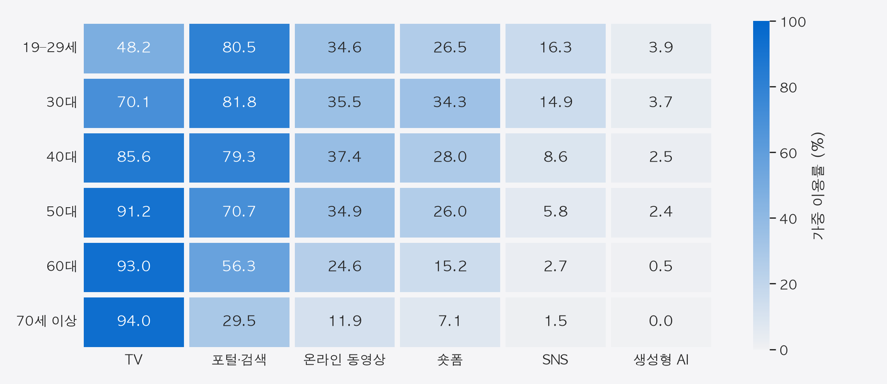

UNDERSTANDING OF DATA LITERACY
2025 NEWS AUDIENCE SURVEY
세대별
뉴스 소비
경로 차이
2025 언론수용자 조사로 살펴본
연령대별 뉴스 이용
202406228 김경현
데이터리터러시의이해 중간 대체 과제
연령대별 뉴스 이용 경로 비교
콘셉트 이미지: Google Flow 생성
01 / RESEARCH DESIGN
어디서 뉴스를 보는가?
연령대를 나누면 답이 달라질까?
전국 만 19세 이상 성인
2025. 7. 8. ~ 9. 2.
태블릿을 활용한 대면면접조사
비교 기준
19–29세, 30대, 40대, 50대,
60대, 70세 이상
연령별 비율에 조사 가중치 WT 적용
‘세대’는 현재 연령대의 차이를 의미
02 / OVERALL
전체에서는 TV가 48.0%
TV와 포털·검색을
주 이용 경로로 고른 비율의 합
전체 비율만으로는
연령대별 차이가 보이지 않습니다.
03 / ROUTE MIX
연령이 높은 집단일수록
TV 중심의 구성이 뚜렷
04 / TV & PORTAL
40대까지는 포털,
50대부터는 TV가 1위
TV 55.9%
포털·검색 28.4%
50대의 TV·포털 격차는
27.6%포인트입니다.
연령대별 주 이용률 비교 · 공통 축 0–100%
05 / TWO MEASURES
가장 많이 쓰는 경로와
이용한 적 있는 경로는 다릅니다
TV가 주 이용 경로
가장 많이 이용한 뉴스 경로는?
문84, 경로 하나만 선택
TV를 가장 많이 쓴 뉴스 경로로 선택
TV 뉴스·시사 주간 시청
지난 1주일간 TV 뉴스를 시청했는가?
문13, 시청 여부 응답
TV 뉴스·시사 프로그램을 한 번 이상 시청
둘 다 전체 응답자 기준입니다.
이제 각 경로의 지난 1주일 뉴스 이용률을 비교합니다.
문13의 TV 뉴스·시사 시청은 TV 수상기뿐 아니라 모바일·컴퓨터를 통한 시청도 포함.
06 / WEEKLY REACH
지난 1주일간 이용한
뉴스 경로를 비교하면

TV는 모바일·컴퓨터를 통한 TV 뉴스/시사 프로그램 시청도 포함(문13).
07 / VIDEO NEWS
숏폼 뉴스는 30대에서 가장 높음
08 / OVERLAPPING AUDIENCES
동영상·숏폼 뉴스의
중복 이용도 연령별로 다름
둘 중 하나 이상 이용
09 / NO NEWS ROUTE REPORTED
19–29세의 뉴스 비이용 응답은
9.5%
여섯 연령집단 중 최고
경로별 이용 차이와 함께
뉴스 비이용 응답도
연령별로 살펴봅니다.
문84의 지난 1주일 기준 응답
10 / AI NEWS / ADDITIONAL CASE
새로운 뉴스 경로:
생성형 AI 이용률 2.1%
19–29세 3.9%
기존 뉴스 경로와 함께
새로운 경로의 이용 규모도
살펴봅니다.
11 / FINDINGS
연령별 경로 차이와
이용률을 읽는 기준
40대까지는 포털이 1위
50대부터는 TV가 1위
30대의 숏폼 뉴스 주간 이용률
여섯 연령집단 중 가장 높음
뉴스 이용률을 비교할 때는
질문과 분모, 경로 간 중복 여부를 함께 확인해야 합니다.
12 / METHODS & LIMITATIONS
재현 가능한 분석과
해석의 범위
분석 방법
공개 SAV 원자료 6,000행 사용
연령 DQ3, 가중치 WT 적용
비율(%) = 해당 응답의 가중치 합 ÷ 집단 가중치 합 × 100
AI 활용
변수 검토·Python 코드·HTML 구현 보조
Seaborn 분석, Manim·Anime.js 애니메이션
Google Flow 콘셉트 이미지 생성
해석할 때 주의할 점
- 한 시점의 연령 차이로 세대 변화나 인과관계를 단정할 수 없음
- 주 이용 경로와 주간 이용률은 서로 다른 문항
- 기술통계 비교이며 유의성 검정은 수행하지 않음
- 원자료의 실제 표본 수와 보고서의 가중 사례수는 다름
실제 n: 828 / 869 / 1,038 / 1,189 / 1,098 / 978
연령집단 순서: 19–29세부터 70세 이상
13 / REFERENCES
참고자료
한국언론진흥재단 (2025). 『2025 언론수용자 조사』
조사 설계 p.48 · 주 이용 경로 p.70
주간 뉴스 이용 p.83·96·110·116·122·130
한국언론진흥재단 (2025). 설문지 겸 코드북, 최종데이터, 통계표
DQ3, WT, Q84, Q13, Q31, Q46, Q53, Q61, Q73 활용 · 사용자 제공 공개 자료
분석 산출물
analyze.py / survey-summary.json / weighted-results.csv
슬라이드 수치는 원자료 가중 재계산, 보고서 주요 수치와 대조
시각화와 디자인
Seaborn · Manim Community · Anime.js 3.2.2 (MIT)
Apple 스타일: 프로젝트 DESIGN.md · 표지: Google Flow 생성 이미지